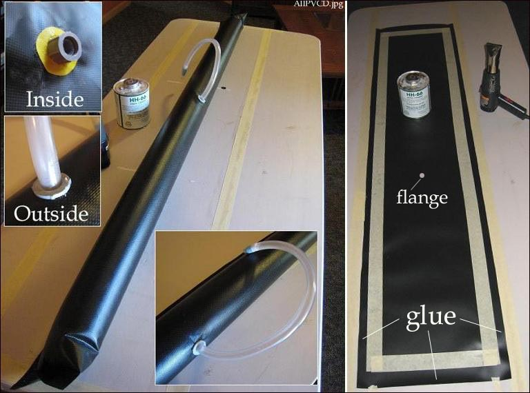

| PVC Sponsons - Page 5 | Menu Previous Page Next Page |
|

The adapter (flange) is attached to the yet unglued 10oz PVC sponson through a 3/4" hole in the center of the sponson skin. Glue is applied to the inside and outside contact point for the flange. The yellow PVC cloth was glued on to provide a thicker base for the flange. The adapter / flange is hand tightened until it can no longer be turned.
One coat of unthinned vinyl cement is brushed onto the 3/4" - 1" outside perimeter of the inside surface of the sponson. PVC has a smooth side and a textured side so apply the cement to the smooth side. Before gluing, lightly wipe down the surface with MEK and allow to dry completely. After glueing, allow the surface to dry completely . Fold over the PVC so that the glued edges are overlapped. Apply heat and pressure to insure a tight seal. Wait a couple of hours before inflating to test for leaks. |
|